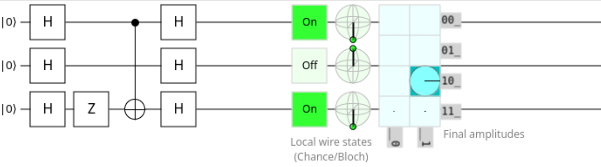
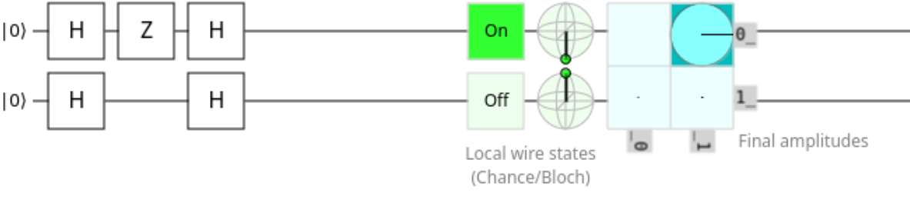

Developing Quantum Circuit
- We will develop a simple and famous quantum circuit, i.e., Bernstein-Varizani to search an hidden element
- We will need the two Pauli H and Z gates
- We will also need a function to measure (sample) from the distribution obtained using the state vector amplitudes
Setup¶
- We need first to obtain an interactive job on the fpga partition and load some modules
Commands
# Please log out and reconnect to Meluxina using X11 forwarding
# ssh -X ... (-X option to enables X11 forwarding)
srun -A <ACCOUNT> -t 02:00:00 -q default -p fpga -N1 --forward-x --pty bash -i
module load env/staging/2023.1
module load git-lfs
module load CMake jemalloc freeglut intel-oneapi 520nmx
FPGA emulation
As the number of FPGA nodes is limited to 20, your interactive job may not start if the number of participants is larger than this number. If so, please use a different partition (e.g., cpu, largemem) to use FPGA emulation.
-
Clone the repository if not already done:
git lfs clone https://github.com/LuxProvide/QuantumFPGA -
Create a symbolic link to the project
ln -s QuantumFPGA/code/FQSimandcd FQSim -
The project contains the following files:
$>tree -L 2
.
├── CMakeLists.txt
├── fpga_image
│ └── quantum.fpga
├── include
│ ├── blochSphere.hpp
│ └── kernels.hpp
└── src
├── bernstein-vazirani.cpp
├── blochSphere.cpp
├── kernels.cpp
├── test_h_gate.cpp
├── test_rxryrz.cpp
└── test_z_gate.cpp
- fpga_image : contains the fpga image build prior to the workshop training to avoid waiting hardware synthesis. Indeed, the offline compiler will extract the bitstream file
aocxand reuse it if and only if the device code did not change - include :
- kernel.hpp: header file containing the signature of function.
- blochSphere.hpp: header file containing the signature of function to draw an OpenGL BlockSphere.
- src :
- bernstein-vazirani.cpp: the source file with the Bernstein-Vazirani circuit.
- blochSphere.cpp: source file containing all code to draw an OpenGL BlockSphere.
- kernel.cpp: source file containing all code for the gates.
- test_h_gate.cpp: source file for the example testing the h gate.
- test_rxryrz.cpp: test example for the 3 rotation gates rx, ry and rz.
- test_z_gate.cpp: source file for the example testing the z gate.
Building code¶
- We strongly recommend to compile and execute your code using the
Intel(R) FPGA Emulation Platformwhich does not require any FPGA board on the system.
- Once your code runs on the
Intel(R) FPGA Emulation Platformwithout errors:
Using Direct Memory Access (DMA)
- DMA is enabled between host and the device if buffer data have a 64-byte alignment.
- We strongly recommend you to load our
jemallocmodule which provides such default alignment:
Device code¶
-
The highlighted code corresponds to the device code or kernel code running on the device
-
Device code is mainly used to modify or accelerate operation related to the state vector. We are going to explain it in a few minutes.
-
We are not going to modify this code but we will use it to create the two required gates
| kernels.cpp | |
|---|---|
1 2 3 4 5 6 7 8 9 10 11 12 13 14 15 16 17 18 19 20 21 22 23 24 25 26 27 28 29 30 31 32 33 34 35 36 37 38 39 40 41 42 43 44 45 46 47 48 49 50 51 52 53 54 55 56 57 58 59 60 61 62 63 64 65 66 67 68 69 70 71 72 73 74 75 76 77 78 79 80 81 82 83 84 85 86 87 88 89 90 91 92 93 94 95 96 97 98 99 100 101 102 103 104 105 106 107 108 109 110 111 112 113 114 115 116 117 118 119 120 121 122 123 124 125 126 127 128 129 130 131 132 133 134 135 136 137 138 139 140 141 142 143 144 145 146 147 148 149 150 151 152 153 154 155 156 157 | |
General approach to apply a quantum gate¶
-
Let's consider a multiqubit register $ |\psi \rangle = \sum\limits_{k=0}^{2^N-1} \alpha_k |k \rangle $ which is a mixture of pure state
-
$ |k \rangle $ is the decimal representation of the pure state k
-
As you can observe it, the number of pure states constituting the state vector is growing exponentially.
-
We can take advantage of the FPGA to apply gate in parallel
Example: applying a general U gate to qubit 2:
-
let's consider \(U=\begin{pmatrix} u_1 & u_2 \\ u_3 & u_4 \end{pmatrix}\)
-
Apply \(U\) on qubit 2 is $ I \otimes U \otimes I $ with $ I $ being the identity matrix
-
Nonetheless, we are not applying the tensor product \(\otimes\) every time which would be inefficient
-
Starting from specific state vector, we will apply for example a gate to the 2nd qubit like following:
-
As you can see in the previous example to apply a gate U with its 4 complex coefficients, we apply \((u_1 u_2)\) to the coefficients corresponding to basis vector with a 0 at position 2 and \((u_3 u_4)\) to the coefficients corresponding to basis vector with a 1 at position 2
-
Knowing this fact, we can divide by two the search and apply the gate coefficient by only searching the 1st, 2nd, kth number where the basis vector has a 0 at the chosen position
-
To convince you, let's continue with our previous example:
- Starting from the indexes, we can find where we should apply \((u_1 u_2)\) coefficient
-
To find coeffcients where \((u_3 u_4)\) should be applied, we only need to add 1 instead of 0 to get the corresponding basis vector
-
Finally, we will have two functions to apply any kind of one qubit gate (except the controlled gates):
- nth_cleared: finds the Nth number where a given binary digit is set to 0.
- apply_gate: apply a general one qubit gate by finding in parallel all pure vector with digit 2 set to 0. For each of these vector, we can easily find the one with digit set to 1 and replace the amplitudes according to what we have above
Computing probabilities from state vector amplitudes¶
-
The following kernel is only used to compute the probability for each pure state vector
-
The probability to measure \(∣k\rangle\) is \(|\alpha_k|^2\) with $\sum\limits_{k=0}^{2^N-1} |\alpha_k|^2 = 1 $
| kernel code | |
|---|---|
Measuring qubits:¶
-
Quantum State Collapse: In classical simulation, measurements typically do not affect the system being measured. However, in quantum simulations, the act of measurement causes the qubit to collapse from its superposition of states to one of the basis states (e.g., 0 or 1). This is a fundamental aspect of quantum mechanics known as wave function collapse.
-
Probabilistic Nature: The result of measuring a qubit is probabilistic. Before measurement, a qubit in superposition has probabilities associated with its possible states. Measurement forces the qubit into one of these states, with the likelihood of each state given by its quantum amplitude squared.
-
In simulation, measuring is a synonym of sampling
Sampling the possible outcomes
- Using the
void get_proba(...)function, fill the body of thevoid measure(...)function - We can use the standard library function
std::discrete_distribution(see below) - Add the following code in the
void measure(...)function body
Implementing the two Pauli H and Z gates¶
Pauli H gate
- The Hadamard gate puts qubits in superposition
- It transform the basis state:
- \(|0 \rangle\) to $\frac{|0\rangle + |1 \rangle}{\sqrt{2}} $
- \(|1 \rangle\) to $\frac{|0\rangle - |1 \rangle}{\sqrt{2}} $
- We add the following code in the
void h(...)function body
Pauli Z gate
The Pauli-Z gate is a single-qubit rotation through \(\pi\) radians around the z-axis.
- We add the following code in the
void z(...)function body
Implementing the Bernstein-Varizani algorithm¶
The Bernstein-Vazirani algorithm is a quantum algorithm that highlights the superiority of quantum computers in solvingspecific problems more efficiently than classical computers. This algorithm solves the problem of determining a hiddenbinary string with minimal queries to a given function.
Problem Setup¶
You are given a black box function (oracle) that computes:
- Function: $ f(x) = a \cdot x $
- a is a hidden string of $ n $ bits.
- x is an \(n\)-bit string.
- The dot product $a \cdot x $ is calculated as $ (a_1x_1 + a_2x_2 + \dots + a_nx_n) $ modulo 2.
- Goal: Determine the hidden string $a $ using the fewest number of queries to \(f\).
Quantum Solution¶
The Bernstein-Vazirani algorithm uses a quantum computer to identify \(a\) with a single query, showing an exponential improvement in query complexity.
Steps of the Algorithm¶
- Initialization: Start with $ n $ qubits in the state $ |0\rangle $ and one auxiliary qubit in the state $|1\rangle $.
- Apply Hadamard Gates: Apply Hadamard gates to all qubits, transforming each $ |0\rangle $to $ \frac{|0\rangle + |1\rangle}{\sqrt{2}} $ and $ |1\rangle $ to \(\frac{|0\rangle - |1\rangle}{\sqrt{2}}\).
- Query the Oracle: The function $ f(x) $ modifies the auxiliary qubit by $ (-1)^{f(x)} $ using a Z gate, encoding the dot product $ a \cdot x $ in the quantum state.
- Apply Hadamard Gates Again: Applying Hadamard gates again to all qubits.
- Measurement: Measure the first $ n $ qubits to directly obtain $a $ in binary form.

No CNOT gate
- We do not have the CNOT gate.
- However, we can replace the previous circuit the following one:

void apply_controlled_gate(sycl::queue &queue, std::complex<float> *stateVector_d,
const unsigned int numStates,
const int control,
const int target,
const std::complex<float> A,
const std::complex<float> B,
const std::complex<float> C,
const std::complex<float> D)
{
queue.parallel_for<class ControlledGate>(sycl::range<1>(numStates),[=]( sycl::item<1> item) {
int global_id = item.get_id(0);
const int zero_state = nth_cleared(global_id,target);
const int one_state = zero_state | (1 << target);
std::complex<float> zero_amp = stateVector_d[zero_state];
std::complex<float> one_amp = stateVector_d[one_state];
if((zero_state & (1 << control)) > 0){
stateVector_d[zero_state] = A * zero_amp + B * one_amp;
}
if((one_state & (1 << control)) > 0){
stateVector_d[one_state] = C * zero_amp + D * one_amp;
}
}).wait();
}
void cnot_x(sycl::queue &queue, std::complex<float> *stateVector_d,
const unsigned int numQubits,
const int control,
const int target){
std::complex<float> A (0.0f,0.0f);
std::complex<float> B (1.0f,0.0f);
std::complex<float> C (1.0f,0.0f);
std::complex<float> D (0.0f,0.0f);
apply_controlled_gate(queue,stateVector_d,std::pow(2,numQubits)/2,control,target,A,
B,
C,
D);
}
Implemetation of the SYCL version of Bernstein-Vazirani